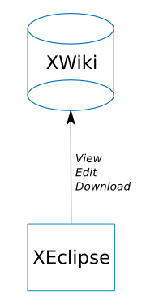

As the project proposal on the XWiki Development website states, the requirements for this projects are:
Requirement number 1 and the offline work related part of requirement number 2 are already implemented in the current version of XEclipse, so these will be skipped.
Currently, as shown in the diagram to the right and mentioned in point 1 in the project requirements above, XEclipse deals with connecting to XWikis, downloading pages, editing them and then uploading the newly edited versions back to their originating XWiki. 
As seen from XWoot's website and in this demo video, the functionalities we will need to render accessible to XEclipse's users are:
XWoot deploys as a web application capable of managing a P2P neighbors list and receiving patches with changes from the P2P network. By doing this, it also provides, trough its servlets, a limited REST-like API for receiving commands.
Given the fact that the P2P synchronization procedure is not fired automatically by XWoot, we have to do it from XEclipse, automatically, every time we issue changes to the XWiki we are or become connected to. Thus, we do that by issuing a HTTP GET command to the Synchronize servlet at the address "/Synchronize?action=synchronize" (relative to XWoot's install location).
For managing the list of neighbors, XWoot does not provide an URL for retrieving the list so add/remove operations in the XEclipse interface would be pointless to implement because they could not be used. As a solution to this problem, the quick and clean choice was made to offer a "Manage" option that would open up a browser window showing XWoot's management page. From there, the user could do the desired operations, without leaving XEclipse.
This being established, two new properties have been assigned to an XWiki connection in XEclipse:
Below, there is a diagram showing what XEclipse has become by applying the above mentioned changes:
Here are described a few steps required for installing all the components for running XEclipse.
Get a copy of the stable XWiki Enterprise at the XWiki Download page. You should find installation instructions in the same place. Install it, but don't start XWiki just yet.
Installing XWoot quite simple. Just grab the xwootApp.war file provided in the xwoot directory and deploy it in your favourite servlet container. I use the same jetty instance used for running the local xwiki, "XWiki Enterprise/webapps".
After deploying(copying) the XWoot .war file, start your XWiki by running the start_xwiki script provided or running the desktop shortcut. This order is important if you use the same container for both XWiki and XWoot like I do. Now open a browser window and enter the address "localhost:8080/xwootApp". This is the configuration of the XWoot component which you have to fill in before continuing.
Grab a copy of the package "Eclipse Classic" at the Eclipse Download page and unpack it.
Now, grab the XEclipse plugin zip file in the bin directory and unpack it in the same directory you installed eclipse just now.
You are now set to run and test the XWiki P2P enabled XEclipse version. Some extra bugfixes are also included comparing to the current trunk version in the SVN.
To use XEclipse, go to Window>Show View and select from the XWiki Eclipse category both the Project Explorer and the Page Preview.
Go to New>Other and from the XWiki Eclipse category choose New Connection.
Enter the required information for the connection and press next for P2P Settings. When done, click Finish.
Practically you have now all you need to test the functionalities. You can, of course, start another XWiki and XWoot instance and add that XWoot as a neighbor in the P2P network but what is important is to see in the Console of the XWiki the Synchronization event being triggered.
If you skipped the P2P Settings when creating a connection and wish to add them now, you have to right-click on a connection and select the P2P page. There you can enter the XWoot endpoint(url of the xwoot) where to issue synchronize commands and you can check the Auto synchronize option.
If you right click on a connection, you can also see the P2P submenu containing quick access to the autosynch enabling/disabling and the Manage command that opens a new editor tab showing the XWoot administration page.
That is about it. If you have the auto-synch option enabled, you have set the xwoot endpoint and you are currently connected, after each Save command you issue upon finishing to edit a page/object, your work will be propagated throughout the P2P network and you can see debug messages in the console where you started the XWiki container.
If you work offline, when you will come back online, upon synchronizing with your remote xwiki, you will also synchronize with the P2P network (if autosynch enabled).
To build in Eclipse, you need to have installed the plugin development package and, obviously, the java development package. If you have the "Eclipse Classic" package downloaded as instructed in the install section, you are set; if not, please make sure you are using an Eclipse version downloaded from the Eclipse website and not an Eclipse installation provided by your operating system.
You need to import the 3 projects found in these directories:
src/xeclipse/plugins/
org.xwiki.eclipse.core/
org.xwiki.eclipse.ui/
org.xwiki.eclipse.xmlrpc/
You do this by using the File>Import wizard and selecting Existing project.
Finally, you right click on the "org.xwiki.eclipse.core" project and select Run As>Eclipse Application.
If you do not have Maven, get it from the Maven Download site.
To build:
If maven complains that it cannot find startup.jar, then copy ${eclipseInstall}/plugin/org.eclipse.equinox.launcher*-xyz.jar to ${eclipseInstall}/startup.jar and retry the compile command.
You should now have a org.xwiki.eclipse.feature_1.2.0.SNAPSHOT.bin.dist.zip file in this directory.